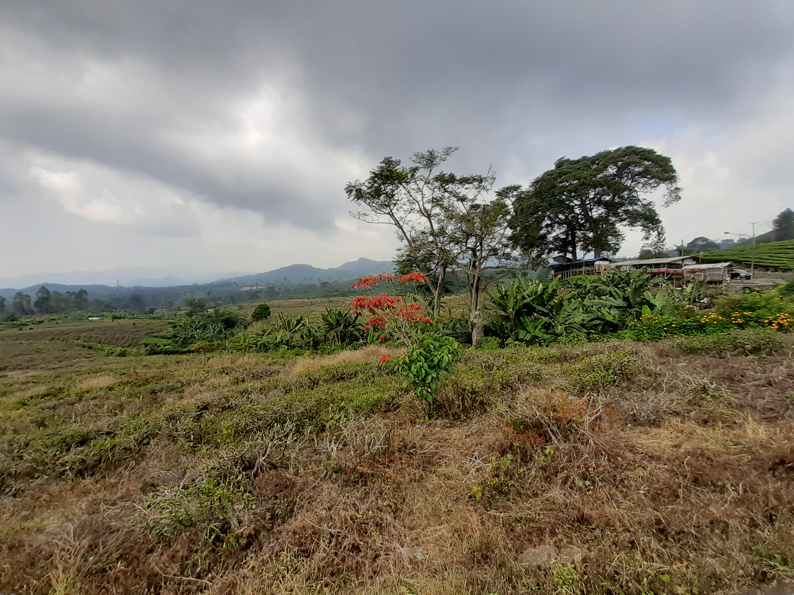

Berbagai Poster Menarik Mengenai Wisata dan Budaya Subang
GALLERY
Melihat uniknya kota Subang
Ciater Highland Resort
Menikmati suasana dataran tinggi di salah satu daerah subang
Menikmati Perkebunan di Kebun Ciater
Ciater Highland Resort, adalah Resort pegunungan bergaya Ranch pertama di Indonesia, dibangun diatas lahan yang luas diantara hamparan hijaunya perkebunan teh, berada pada ketinggian 800 meter dpl dengan udara antara 15 - 20 derajat. yang sejuk dibawah kaki gunung Tangkuban Perahu, Ciater, Subang, Jawa Barat.

Menangkap Ikan di Lembah Gunung Kujang
Keunggulan Wisata pancing Lembah Gunung Kujang diantaranya kolam pancing yang sangat luas, nyaman dan sejuk.
Kebun Teh Hijau Ciater
Kebun teh ciater merupakan salah perkebunan teh yang dikembangkan pada zaman penjajahan Belanda di Jawa Barat dan saat ini dikelola oleh PTPN VIII. Wisatawan yang berkunjung ke Bandung sudah tidak asing dengan kebun teh ini karena dilewati ketika menuju ke Pemandian Air Panas Ciater. Pemandangan alam Kebun Teh Ciater cukup menarik dan indah karena berada di lereng Gunung Tangkuban Perahu dan perbukitan utara Bandung.
Ayo Pancing Ikan dan Dapatkan Ikan Monsternya
Semakin Besar Semakin mantapppppppp
Abadikan Foto di Daerah Perkebunan
Pemandangan Kebun Teh Ciater terlihat indah dan menarik dari tepi Jalan Raya Subang-Bandung. Pengunjung atau wisatawan tidak perlu bersusah payah melewati jalan kecil untuk mencari lokasi yang diinginkan.
Biru Alam yang Indah di Curug Cibiru
Belum diketahui secara pasti apa penyebab warna airnya berwarna biru toska. Namun salah satu kemungkinan penyebabnya adalah dari batuan yang menyusun dasar sungainya yang tampak berwarna putih seperti batuan kapur.